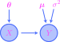

THIS CHAPTER IS UNDER CONSTRUCTION!!!
14. Statistical inference#
14.1. Statistics and their distributions#
Definition 14.1
Let \(\bX\) be a \(m\)-dimensional random vector. A statistic is a random variable of the form
where \(r:\bbr^m \to \bbr\) is a real-valued function. An observed value \(t\) of \(T\) is called an observed statistic or empirical statistic.
If we conceptualize the components of a random vector \(\bX\) as a dataset \(X_1,X_2,\ldots,X_m\), then a statistic
is simply a function of the data. Crucially important examples of statistics include those defined as follows:
Definition 14.2
Let \(\bX = (X_1,\ldots,X_m)\) be an \(m\)-dimensional random vector. The sample mean is defined to be the statistic
while the sample variance is defined to be the statistic
The corresponding empirical statistics are the empirical mean and empirical variance defined as
Very often, the component random variables \(X_1,X_2,\ldots,X_m\) of the random vector \(\bX\) in the definition are assumed to form a random sample, i.e., an IID sequence of random variables. The dimension \(m\) is then referred to as the sample size. In principle, then, the sample size \(m\) can be any positive integer, and so it is often convenient to write \(\overline{X}_m\) for the sample mean, explicitly displaying the sample size. This gives us an entire infinite sequence of sample means:
Since statistics are random vectors, they have their own probability distributions. These are given special names:
Definition 14.3
The probability distribution of a statistic \(T\) is called the sampling distribution of \(T\).
The sampling distributions for sample means \(\overline{X}_m\) are particularly important, and one of the main goals of Section 14.2 is to study the limiting behavior (or asymptotic behavior) of the sampling distributions in the sequence (14.1) as \(m\to \infty\).
In general, however, computing the sampling distributions is difficult. But if we actually have observed data \(x_1,x_2,\ldots,x_m\), then (as you will explore in the programming assignment) there is a resampling method known as bootstrapping that yields approximations to sampling distributions. An example is given by the histogram (with KDE) on the right-hand side of the following figure, where a histogram (with KDE) of the empirical distribution of an observed dataset is given on the left-hand side:
Show code cell source
import numpy as np
import scipy as sp
import seaborn as sns
import pandas as pd
import matplotlib.pyplot as plt
import scipy as sp
import matplotlib_inline.backend_inline
import matplotlib.colors as clr
import warnings
plt.style.use('../aux-files/custom_style_light.mplstyle')
matplotlib_inline.backend_inline.set_matplotlib_formats('svg')
warnings.filterwarnings("ignore")
blue = '#486AFB'
magenta = '#FD46FC'
np.random.seed(42)
X = sp.stats.gamma(a=5)
sample_size = 100
resample_size = 1000
random_sample = X.rvs(size=sample_size)
replicate_means = []
num_resamples = 10000
for _ in range(num_resamples):
sample = np.random.choice(a=random_sample, size=resample_size, replace=True)
replicate_means.append(sample.mean())
_, axes = plt.subplots(ncols=2, figsize=(10, 3))
sns.histplot(x=random_sample, ec='black', stat='density', kde=True, ax=axes[0])
sns.histplot(x=replicate_means, ec='black', stat='density', kde=True, ax=axes[1])
axes[0].set_xlabel('$x$')
axes[0].set_ylabel('density')
axes[0].set_title('observed data')
axes[1].set_xlabel('$x$')
axes[1].set_ylabel('density')
axes[1].set_title('bootstrap sampling distribution of sample mean')
plt.tight_layout()
Observe that the sampling distribution on the right-hand side appears to be well approximated by a normal distribution. This is actually a manifestation of the asymptotic behavior of sample means that we alluded to above; indeed, as we will see in Section 14.2, the Central Limit Theorem tells us that the sequence (14.1) of sample means converges (in distribution) to a normal distribution as \(m\to \infty\), provided that the random variables are IID. This is true even though the observed data are definitely not normally distributed. Moreover, the mean of the sampling distribution is approximately \(4.924\), while the mean of the observed data is approximately \(4.928\). The fact that these means are nearly equal is a consequence of another theorem in Section 14.2 called the Law of Large Numbers.
Let’s consider the sample mean a little closer:
Theorem 14.1 (Properties of the sample mean)
Let \(X_1,X_2,\ldots,X_m\) be an IID random sample from a distribution with mean \(\mu\) and standard deviation \(\sigma\).
The expectation of the sample mean \(\overline{X}\) is \(\mu\).
The variance of the sample mean \(\overline{X}\) is \(\sigma^2/m\), and hence its standard deviation is \(\sigma/\sqrt{m}\).
If the \(X_i\)’s are normally distributed, then so too is the sample mean \(\overline{X}\).
14.2. Large sample theory#
Theorem 14.2 (Central Limit Theorem)
Let \(X_1,X_2,\ldots,X_m\) be an IID random sample from a distribution with mean \(\mu\) and standard deviation \(\sigma\). Then, in the limit as \(m\to \infty\), we have
where \(Z \sim \mathcal{N}(0,1)\).
14.3. Confidence intervals#
Theorem 14.3
Let \(X_1,X_2,\ldots,X_m\) be an IID random sample from a normal distribution with mean \(\mu\) and standard deviation \(\sigma\). Then the statistic
has a standard normal distribution. This statistic is called the standardized mean.
Theorem 14.4
Let \(X_1,X_2,\ldots,X_m\) be an IID random sample from a normal distribution with unknown mean \(\mu\) and known standard deviation \(\sigma\), and let \(\bar{x}\) be the empirical mean computed from an observed random sample. For \(\alpha\in [0,1]\), the interval
is a \(100(1-\alpha)\%\) confidence interval for the mean \(\mu\).
Theorem 14.5
Let \(X_1,X_2,\ldots,X_m\) be an IID random sample from a distribution with unknown mean \(\mu\) and known standard deviation \(\sigma\), and let \(\bar{x}\) be the empirical mean computed from an observed random sample. For \(\alpha\in [0,1]\) and \(m\) sufficiently large, the random interval
is approximately a \(100(1-\alpha)\%\) confidence interval for the mean \(\mu\).
Definition 14.4
Let \(\nu\geq 1\) be an integer. A continuous random variable \(X\) is said to have a \(t\)-distribution with \(\nu\) degrees of freedom, denoted
if its probability density function is given by
with support \(\bbr\).
Theorem 14.6
Let \(X_1,X_2,\ldots,X_m\) be an IID random sample from a normal distribution with mean \(\mu\) and standard deviation \(\sigma\), and let \(\bar{x}\) and \(s\) be the empirical mean and standard deviation computed from an observed random sample. Then the statistic
has a \(t_{m-1}\) distribution. This statistic is called the studentized mean.
Theorem 14.7
Let \(X_1,X_2,\ldots,X_m\) be an IID random sample from a normal distribution with unknown mean \(\mu\) and unknown standard deviation \(\sigma\), and let \(\bar{x}\) and \(s\) be the empirical mean and standard deviation computed from an observed random sample. For \(\alpha \in [0,1]\), the interval
is a \(100(1-\alpha)\%\) confidence interval for the mean \(\mu\).
14.4. Hypothesis tests#
14.5. Statistical inference in linear regression#
Consider a simple linear regression model with parameters \(\beta_0\), \(\beta_1\), and \(\sigma^2\). Given an observed dataset
we saw in Corollary 13.1 that the maximum likelihood estimates
for the “true” bias and slope terms \(\beta_0\) and \(\beta_1\) are
We also defined the predicted values and residuals by the equations
These definitions of \(\hat{y}_i\) and \(r_i\) suited our brief analysis in Chapter 12. However, in order to obtain their values, we would need to know the “true” values of \(\beta_0\) and \(\beta_1\), which we presumably don’t know! So, our discussion in this section begins with alternate definitions of these quantities based on the MLEs for the bias and slope terms:
Definition 14.5
Letting the notation be as above, we define the \(i\)-th predicted value and \(i\)-th residual to be
for each \(i=1,2,\ldots,m\).
Definition 14.6
We define
Then also:
Theorem 14.8
Consider a linear regression model with parameters \(\beta_0\), \(\beta_1\), and \(\sigma^2\). Let \(\hat{\beta}_1\) be the slope estimator defined in slope-estimator-defn.
We have \(E(\hat{\beta}_1) = \beta_1\).
We have \(V(\hat{\beta}_1) = \sigma^2 / S_{xx}\).
The sampling distribution of \(\hat{\beta}_1\) is normal.
14.6. Analysis of variance#
Definition 14.7
Let \(n\geq 1\) be an integer and let \(\btheta^\intercal =(\theta_1,\ldots,\theta_n)\) be a vector such that \(0\leq \theta_j \leq 1\) for each \(j=1,\ldots,n\) and \(\sum_{j=1}^n \theta_j = 1\). A discrete random variable \(X\) is said to have a categorical distribution with parameter \(\btheta\), denoted
if its probability mass function is given by
if \(x\in \{1,2,\ldots,n\}\), and \(p(x;\btheta)=0\) otherwise.
Definition 14.8
An analysis of variance model, or ANOVA model, is a probabilistic graphical model whose underlying graph is of the form
{kind=link}
The model has the following parameters:
A parameter vector \(\btheta \in \bbr^n\) such that \(X \sim \Cat(\btheta)\).
A parameter vector \(\bmu \in \bbr^n\).
A positive real parameter \(\sigma^2>0\).
The link function at \(Y\) is given by
and \(\bmu^\intercal = (\mu_1,\mu_2,\ldots,\mu_{n})\).